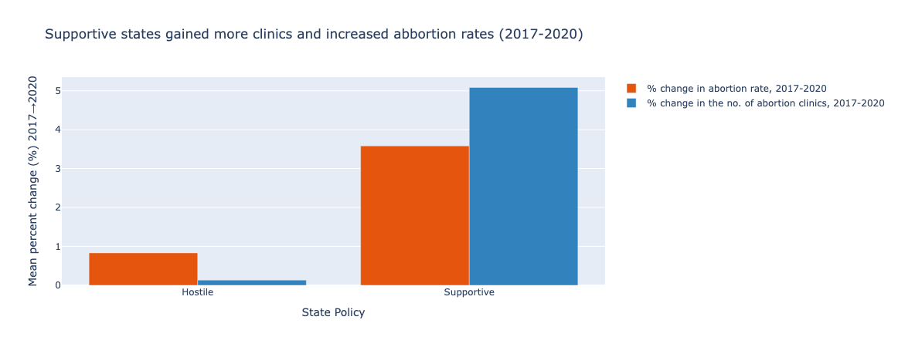
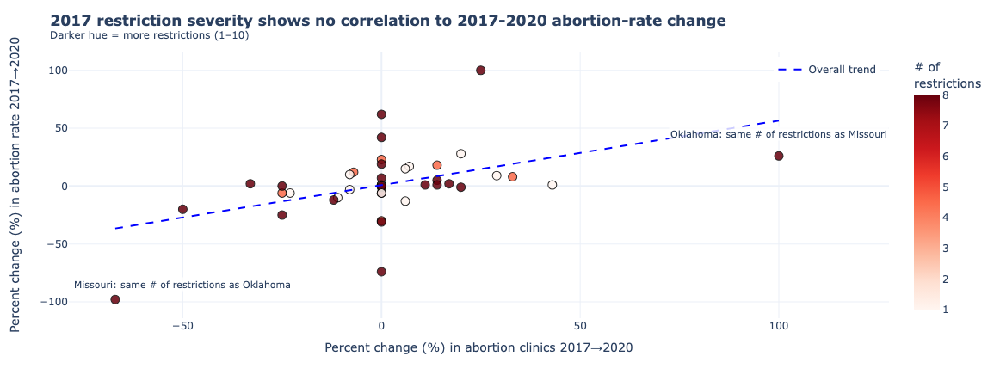

Wenxi Li | wel055@ucsd.edu
Claim to evaluate: “The abortion restrictions in place by 2017 effectively reduced abortions.”

Supportive vs Hostile — amplifies mean gap, hides nuance. (Supportive state remain supportive, hostile and extremely hostile states collapsed to hostile)
Crafting paired visuals for and against a single claim laid bare how small analytical
or stylistic tweaks alter the reader’s takeaway. The bar chart felt almost neutral
—just aggregate, color, headline—yet that simplicity masked a trap.
Because I averaged every hostile-policy state into one number, it glossed over how wildly
individual experiences diverged. Two states with the same 2017 restriction count illustrate
the danger: Oklahoma’s abortion rate rose by about +45 percent while Missouri’s decreased by
nearly 100 percent. Averaging those opposites produced a neat middle value that looked like
steady “no change,” creating an illusion of tidy consensus that simply is not there.
The scatter demanded more nuance; the pattern looked not obvious which pursuade the audiences
that the abortion restrictions in 2017 are not effective. I encoded restriction
severity and surfaced named outliers. That effectively turned “messy scatter” into
a pointed contradiction of policy efficacy.
Level and number of restrictions are taken from the Guttmacher Institute’s “State Abortion Policy” scorecard, 2017 edition1
1 Restriction counts and policy classifications: Guttmacher Institute, “Policy Trends in the States, 2017,” Appendix table of ten flagship abortion restrictions.
I learned that ethical visualization is a practice of selective omission. Since no single view can show everything, we must decide what to collapse, what to highlight, and what to annotate. Acceptable persuasion, to me, means the underlying data remain accessible and encodings fully disclosed; the audience can reconstruct an alternate view if they wish. Choices cross into “misleading” when scale truncation, category lumping, or palette skew prevent an informed reader from seeing the counter-evidence without re-analysing the raw numbers. The hardest boundary to police is intent: a subtle design that genuinely clarifies for one audience can manipulate another. The safest safeguard is multiplicity—showing at least one view that could falsify your own claim. That is why I deliver these two opposing plots side-by-side.